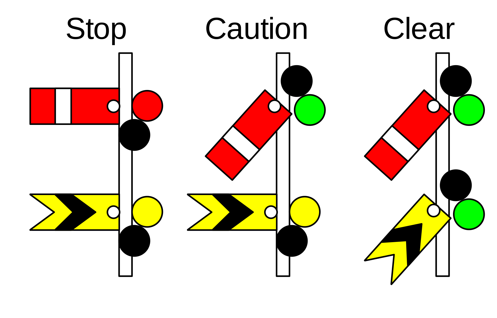
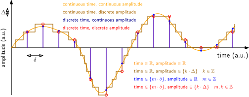

22051
Signals and Systems in Discrete Time
Lecture 1
Terminology, classification, and discretization of signals
Bastian Epp
What is going to happen today
- Some examples of signals
- Signals as sums of sinusoids (real- and complex valued)
- Signal periodicity
- Basic system
- Continuous versus discrete-time signals
- Analogue-digital / digital-analogue (AD/DA) conversion
- Aliasing
Signals
Reading: Introductory chapter
What is a signal?
A signal is...
-
An indicator, such as a gesture or colored light, that serves as a means of communication

- An impulse or a fluctuating electric quantify, such as voltage, corrent, or electric field strength, whose variations represent coded information.
- The sound, image, or message transmitted or received in telegraphy, telephony, radio, television, or radar.
Examples of signals
In time, frequency, time-frequency, manipulated...
Classification of signals
...we will deal with discrete-time, discrete-amplitude signals...

Description of signals
In mathematical terms as a sum of sinusoids
\[x_a(t) = \sum_{k=0}^\infty A_k \cdot \cos(2\pi k F_0 t + \Theta _k) \]Or as a complex exponentials
\[ x_a(t) = \sum_{k=0}^\infty c_k e^{j 2 \pi k F_0 t + \Theta _k} \]Check out the screencast on DTU LEARN
Description of signals
Complex exponentials
\[ x_a(t) = \sum_{k=0}^\infty c_k e^{j 2 \pi k F_0 t + \Theta _k} \]
Signals are periodic with period $$ 1/F_0 $$
A signal and a system
It's all about processing some signal thorugh some system
The most general description of what happens in signal processing
A signal and a system
It's all about processing some signal thorugh some system

...more on that in lecture 2!
Sampling
SUBTITLE
What do we do when we "sample" a signal?
What do we do when we "sample" a signal?
Formal definition
Discretization of a continuous signal by picking single values at defined values of the sampling dimension. This could be time (audio signal), space (geophysics) or temperature (meterology).
What do we do when we "sample" a signal?
A more comprehensive definition
Discretization of a continuous signal by picking single values at defined values of the sampling dimension. This could be time (audio signal), space (geophysics) or temperature (meterology).
VID SAMPLING
Sampling along one dimension
Temporal sampling
- Definition of a sampling ratee (or sampling frequency, e.g., in 1/s = Hz)
- Samples are taken at equal intervals (sampling period)
How low should we go to capture the signal?
Sampling along one dimension
Temporal sampling
- Definition of a sampling ratee (or sampling frequency, e.g., in 1/s = Hz)
- Samples are taken at equal intervals (sampling period)
How low should we go to capture the signal?
Sampling along one dimension
Temporal sampling
- Definition of a sampling ratee (or sampling frequency, e.g., in 1/s = Hz)
- Samples are taken at equal intervals (sampling period)
How low should we go to capture the signal?
Sampling along one dimension
Temporal sampling
- Definition of a sampling ratee (or sampling frequency, e.g., in 1/s = Hz)
- Samples are taken at equal intervals (sampling period)
How low should we go to capture the signal?
Sampling along one dimension
Temporal sampling
- Definition of a sampling ratee (or sampling frequency, e.g., in 1/s = Hz)
- Samples are taken at equal intervals (sampling period)
How low should we go to capture the signal?
How many samples to use?
The Nyquist frequency
Implications for sampling of continuous signals
Let's do the math! Sampling!
The time-continuous signal
\[ \]
Sampling of ...
\[ \]
Yields the sampled function
\[ \]
Or as sum of discrete..
\[ \]
Let's do the math! Sampling!
Rewritten as a Fourier series:
\[ \]
Let's do the math! Sampling!
And the Fourier transform
\[ \]
Aliasing
SUBTITLE
Frequencies that are (not) there
Aliasing
Frequencies that are (not) there:
Aliasing
Example of an alised signal
Reconstruction (ideal)
Let’s do the math
Reconstruction (ideal)
Let’s do the math
Reconstruction (ideal)
Some practical considerations
SUBTITLE
Some practical considerations
Some practical considerations
Hands-on for today
SUBTITLE
Hands-on for today
Summary and take-home
SUBTITLE
Take-home messages for today